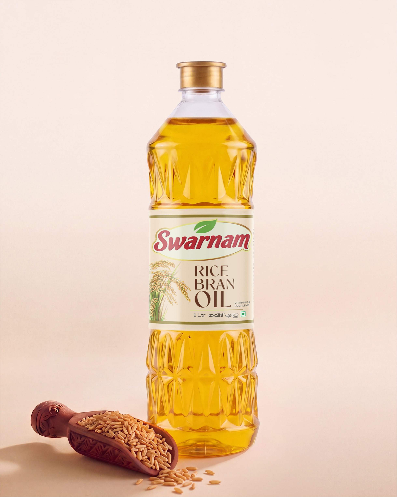

Pure rice bran oil from Swarnam Group. Lighter on your food, kinder to your heart, stable enough for your hottest pan.
A word on the spelling. "Helth" is intentional. We wanted a name as direct as the product — fewer letters, no excess, nothing pretending to be more than it is. Same idea as the oil.

A rare antioxidant, naturally present in rice bran oil and almost nowhere else, studied for cholesterol balance.
Stable at the temperatures most Indian cooking actually happens at. Safe for deep frying.
Lower viscosity means less oil per dish. Your bottle lasts longer, your food eats lighter.
Close to what WHO considers ideal in a cooking oil. Naturally free of trans fats.
Good nutrition doesn't need exaggerated promises. Here's what makes Rice Bran Oil a balanced choice for everyday Indian cooking.
Rich in monounsaturated and polyunsaturated fats, naturally free of trans fats, making it a balanced everyday cooking oil.
Lower viscosity means food absorbs less oil during cooking, helping dishes feel lighter while making each bottle go further.
Naturally occurring compounds studied for their antioxidant role in supporting skin and cellular health.
Stable for sautéing, stir-frying, deep frying and high-flame Indian cooking without breaking down quickly.
We are not claiming Rice Bran Oil prevents disease or cures anything. We are saying it is one of the most balanced everyday cooking oils available—and we make the cleanest version we know how to make.
Both belong in a Kerala kitchen. Here's when each one shines.
Both have their place. Most Kerala kitchens keep both.
Whether you're buying for your kitchen, your restaurant or your distribution network.
Rice bran oil has a fatty acid profile close to what the WHO recommends for cooking oils. It naturally contains gamma-oryzanol, a rare antioxidant, and has a high smoke point, making it one of the most balanced everyday cooking oils available.
Yes. Rice Bran Oil has a high smoke point and remains stable during deep frying. Its lower absorption also helps food feel lighter.
Absolutely. Rice Bran Oil is formulated for everyday Indian cooking including sautéing, stir-frying, tempering and frying.
Rice Bran Oil is manufactured at Swarnam Group's production facility in Aluva, Kerala.